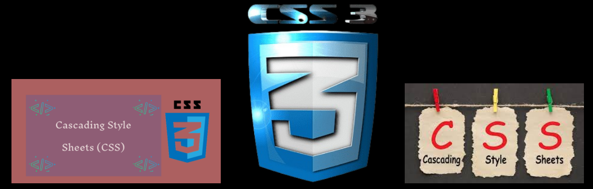

Cascading Style Sheets
CSS

CSS veb-sahifa
yaratuvchilari tomonidan ranglar, shriftlar, alohida bloklarning
tartibini va ushbu veb sahifaning paydo bolishning boshqa jihatlarini
belgilash uchun ishlatadi.
CSS-ni ishlab
chiqishning asosiy maqsadi veb-sahifaning (HTML yoki boshqa belgilash
tillari yordamida ishlab chiqarilgan) mantiqiy tuzilishning tavsifini
ushbu veb-sahifa (hozir rasmiy
CSS yordamida ishlab
chiqarilgan) tashqi ko'rinishi tavsifidan ajratish edi. Ushbu ajratish
hujjatning mavjudligini oshirish, koproq moslashuvchanligi va taqdimonti
boshqarish qobilyatini taminlab, shuningdek tarkibiy tarkibdagi
nurrakablik va takrorlanuvchanlikni kamaytirishi mumkun.